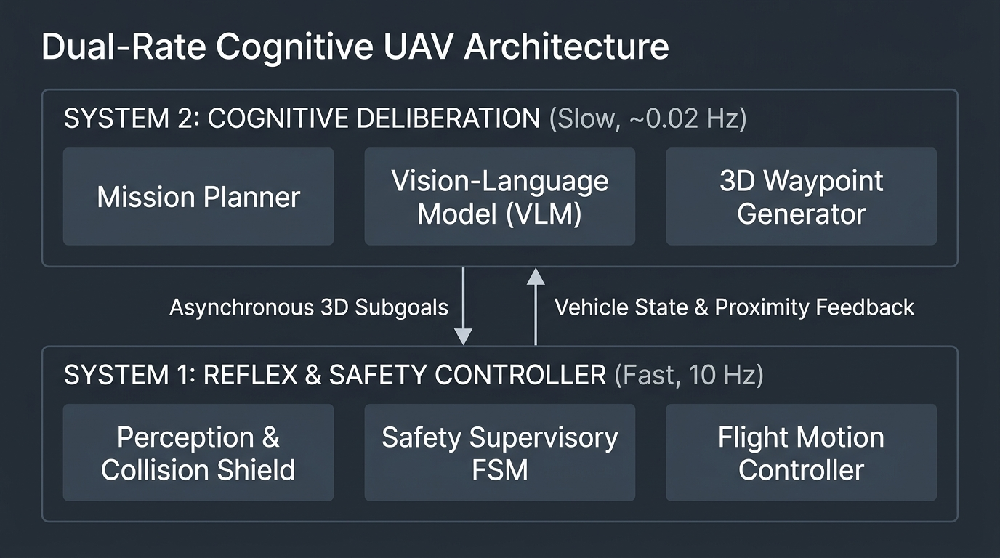
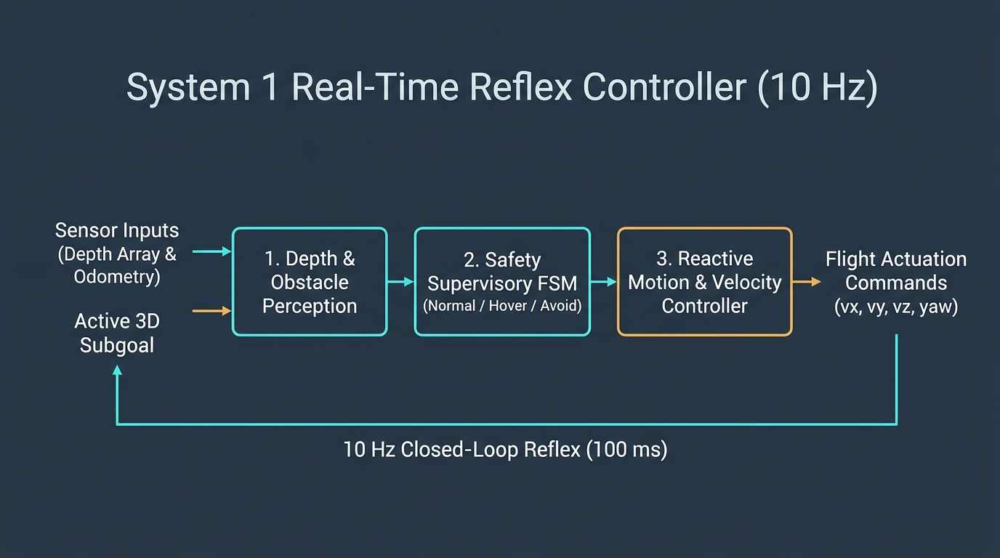
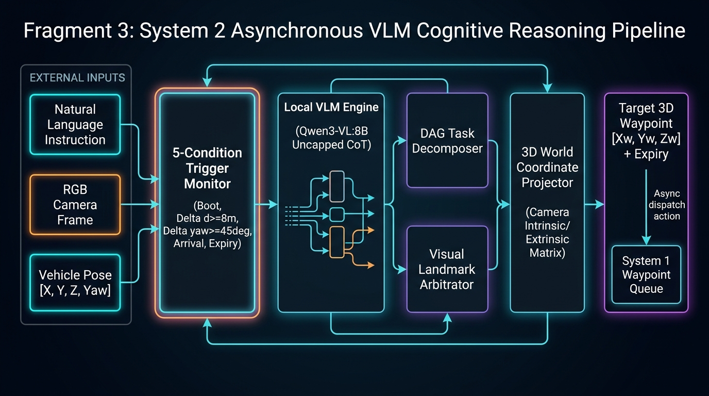

Decoupling High-Frequency Reflex Control (10 Hz) from Asynchronous VLM Deliberation (~0.02 Hz)

Operates asynchronously at ~0.02 Hz (every 45-60s or event-triggered). Formulates high-level navigation strategy, performs visual CoT reasoning, and projects 3D waypoints.
Completely isolates the 10 Hz flight thread from cognitive reasoning delays.
Operates strictly at 10 Hz (100 ms loop). Guarantees flight stability and collision prevention regardless of VLM status.

Processes raw forward depth into 3x3 sectors. Replaces infinite sky rays (>100m) with 100.0m sentinels to avoid false walls, and computes frontal obstacle clearance d_frontal.
FSM with 4 strict states: NORMAL (clear cruise at 3.0 m/s), HOVER_REPLAN (station-keeping hover while awaiting subgoals), AVOID_EMERGENCY_CLIMB (immediate vertical ascent if obstacle ≤ 1.5m), and LAND.
Blends target attraction with repulsive potential fields into body velocities [vx, vy, vz, yaw_rate]. Dispatches via non-blocking RPC while strictly preserving the 25cm camera nose mount offset.

Evaluates every 100ms and fires an async deliberation task only upon: (1) Mission Start, (2) Subgoal Arrival ≤ 2.0m, (3) Displacement ≥ 8.0m, (4) Heading Rotation ≥ 45°, or (5) Heartbeat Expiry.
Operates with uncapped reasoning tokens so the model can freely deliberate its chain of thought. Protected by a generous 180-second deadman watchdog to avoid premature timeouts.
Converts selected pixel coordinate (u, v) and metric depth Z using pinhole intrinsic and drone extrinsic matrices into an absolute world coordinate [Xw, Yw, Zw].